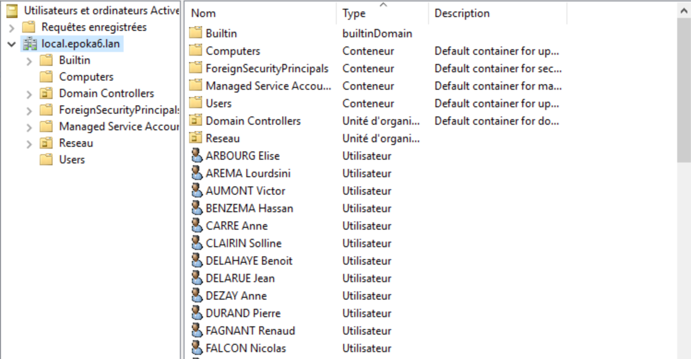
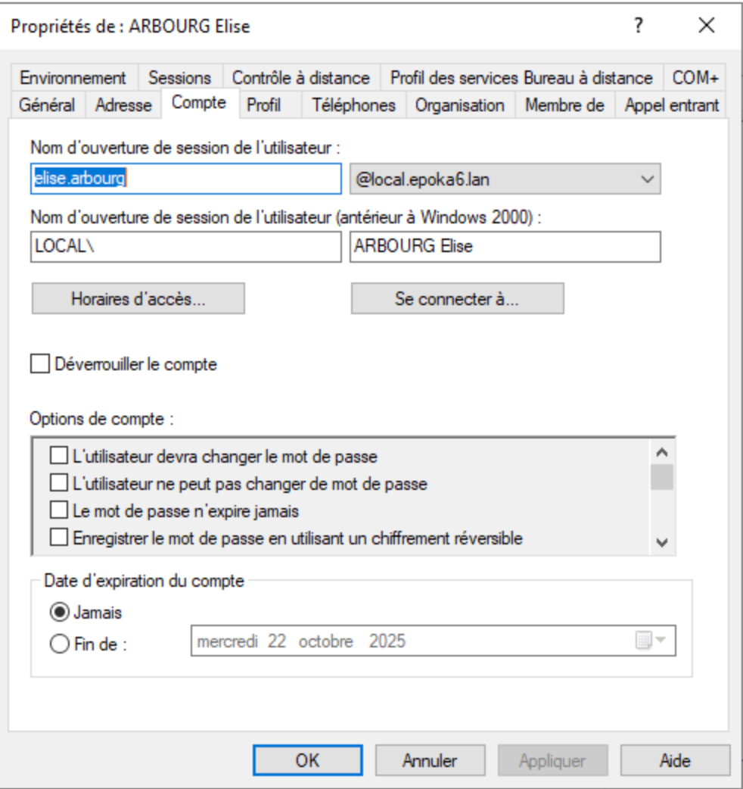

Mission 2 – Mise en place d’un contrôleur de domaine et d’un service DHCP¶

Auteur : Esteban Touzet
Date de rédaction : 08/09/2025
Version : 1
Prérequis¶
| Élément | Valeur |
|---|---|
| Nom du serveur AD | ADEPOKA |
| Nom du serveur DHCP | DHCPEPOKA |
| IP AD | 172.16.56.1 |
| IP DHCP | 172.16.56.2 |
| OS AD | Windows Server 2019 |
| OS DHCP | Debian 12 |
| Services | Active Directory (AD), DNS et DHCP |
Plan d’adressage¶
| Service | Adresse réseau | Plage d’adresses | Masque | Diffusion |
|---|---|---|---|---|
| Rédaction (VLAN 61) | 192.168.6.0 | 192.168.6.1 - 192.168.6.62 | 255.255.255.192 | 192.168.6.63 |
| Administration (VLAN 11) | 192.168.6.64 | 192.168.6.65 - 192.168.6.126 | 255.255.255.192 | 192.168.6.127 |
| Visiteurs (VLAN 71) | 192.168.6.128 | 192.168.6.129 - 192.168.6.158 | 255.255.255.224 | 192.168.6.159 |
| Développement (VLAN 21) | 192.168.6.160 | 192.168.6.161 - 192.168.6.190 | 255.255.255.224 | 192.168.6.191 |
| Direction (VLAN 31) | 192.168.6.192 | 192.168.6.193 - 192.168.6.222 | 255.255.255.224 | 192.168.6.223 |
| Réseau (VLAN 41) | 192.168.6.224 | 192.168.6.225 - 192.168.6.238 | 255.255.255.240 | 192.168.6.239 |
Les passerelles sont la première adresse de chaque sous-réseau.
️ Service Active Directory – DNS¶
Étape 1 : Configurer la carte réseau¶
Configurer la carte réseau avec l’adresse IP fixe indiquée ci-dessus.
Étape 2 : Ouvrir le gestionnaire de serveur¶
Lancer le Gestionnaire de serveur pour préparer l’installation.
Étape 3 : Ajouter des rôles et des fonctionnalités¶
- Clic droit sur Gérer → Ajouter des rôles et des fonctionnalités
- L’assistant d’ajout s’ouvre → cliquer sur Suivant
Étape 4 : Type d’installation¶
- Sélectionner Installation basée sur les rôles ou les fonctionnalités
- Cliquer sur Suivant
Étape 5 : Sélection du serveur¶
- Sélectionner le serveur local comme cible
- Cliquer sur Suivant
Étape 6 : Rôles de serveur¶
- Cocher Services de domaine Active Directory
Étape 7 : Ajouter des fonctionnalités¶
- Cliquer sur Ajouter des fonctionnalités puis sur Suivant
Étape 8 : Sélectionner les fonctionnalités¶
- Laisser les options par défaut
- Cliquer sur Suivant
Étape 9 : AD DS¶
- Cliquer sur Suivant pour valider le service AD DS
Étape 10 : Confirmer les sélections¶
- Vérifier le résumé
- Cliquer sur Installer
- Activer le redémarrage automatique si nécessaire
Étape 11 : Promouvoir le serveur en contrôleur de domaine¶
- Une notification jaune s’affiche
- Cliquer sur Promouvoir ce serveur en contrôleur de domaine
Étape 12 : Ajouter une nouvelle forêt¶
- Sélectionner Ajouter une nouvelle forêt
- Entrer le domaine racine (ex.
local.epoka6.lan)
Étape 13 : Options du contrôleur de domaine¶
- Laisser les valeurs par défaut
- Définir un mot de passe DSRM
- Cliquer sur Suivant

Étape 14 : Options DNS¶
- Ignorer le message d’erreur sur la délégation DNS
- Cliquer sur Suivant
Étape 15 : Nom NetBIOS¶
- Garder le nom proposé (ou le modifier si besoin)
- Cliquer sur Suivant
Étape 16 : Chemins¶
- Laisser les chemins par défaut (
C:\Windows\NTDS, etc.) - Cliquer sur Suivant
Étape 17 : Examiner les options¶
- Vérifier le résumé
- Cliquer sur Suivant
Étape 18 : Vérification des prérequis¶
- Corriger les éventuelles erreurs
- Cliquer sur Installer
- Le serveur redémarre automatiquement

Script PowerShell d’importation Active Directory¶
Étape 19 : Modifier le script¶
- Définir le chemin du fichier
.csvcontenant les utilisateurs :
C:\Users\Administrateur\Desktop\usersEPOKA.csv
-
Autoriser l’exécution des scripts :
Set-ExecutionPolicy RemoteSigned -
Lancer le script PowerShell.
Étape 21 : Vérifier le bon fonctionnement du script¶
- Contrôler la création des utilisateurs dans AD.
Étape 22 : Connexion avec un utilisateur créé¶
- Sur le poste client :
Paramètres → Système → Informations système → Joindre un domaine - Saisir le nom du domaine
local.epoka6.lan
- Exemple de compte :
Utilisateur : elise.arbourg@local.epoka6.lan Mot de passe : etudiant_007
 
Service DHCP – KEA (Debian 12)¶
Installation du serveur DHCP KEA¶
sudo apt-get update
sudo apt-get install kea-dhcp4-server
Vérification du service :
sudo systemctl status kea-dhcp4-server
Configuration du serveur DHCP¶
-
Identifier le nom de l’interface réseau :
ip a -
Sauvegarder l’ancien fichier de configuration :
sudo mv /etc/kea/kea-dhcp4.conf /etc/kea/kea-dhcp4.conf.bkp - Créer un nouveau fichier :
sudo nano /etc/kea/kea-dhcp4.conf
Ajouter une étendue DHCP pour le réseau 172.16.6.0/24 :
{
"subnet4": [
{
"subnet": "172.16.6.0/24",
"pools": [
{ "pool": "172.16.6.10 - 172.16.6.200" }
],
"option-data": [
{ "name": "routers", "data": "172.16.6.1" },
{ "name": "domain-name-servers", "data": "172.16.56.1" },
{ "name": "domain-name", "data": "local.epoka6.lan" }
]
}
]
}
Redémarrer le service¶
sudo systemctl restart kea-dhcp4-server.service
Vérifier si le service fonctionne :
sudo journalctl -xe | grep -e kea